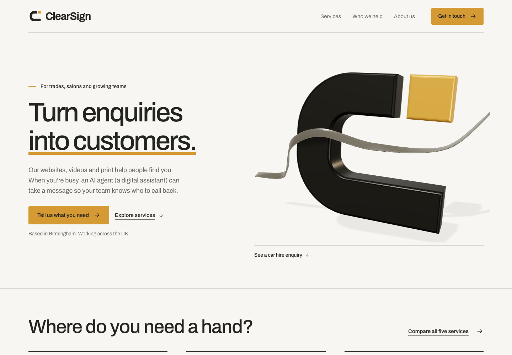
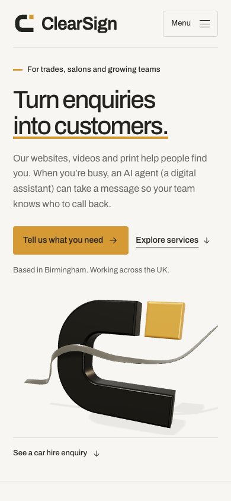

A clear explanation of your business
Pages for the services, work, location and details customers need before deciding to contact you. Your quote sets out which pages and content we will produce.
Give people a clear view of your services, your work and how to contact you. We build websites that work on phones and computers, with a straightforward route to an enquiry or your existing booking system.


A website should help someone decide whether you are right for them, then make the next step easy. We plan the content and contact options around that journey.
Discuss this servicePages for the services, work, location and details customers need before deciding to contact you. Your quote sets out which pages and content we will produce.
Use your approved logo, colours, images and wording consistently, with readable layouts on phones, tablets and computers.
Forms, phone or message links, or a route to your existing booking page. We agree where requests arrive and how your team handles them.
We help with the words and plan the photos or videos you need. Filming can be quoted separately if you want it.
Review the site before launch, learn how updates will be handled and agree ownership, access, support and running costs.
Example project
A customer is looking for a haircut and wants to check your services before booking.
They find your services, prices, opening times and location on their phone.
They follow the booking link or send your team an enquiry.
Your booking system confirms the appointment, or your team replies to the request.
The aim is a clearer path from discovering the salon to making a booking, with fewer routine questions for staff. Actual enquiries and completed bookings need to be reviewed after launch.
Agree what a useful website enquiry looks like, then check how people use the site. Where tracking is included, we compare the starting point with the results after launch.
Look at the number and quality of enquiries, and how many become appointments or paid work where you can track that.
Review enquiry-form completion and use of booking or contact links. These show where people take the next step or need more help.
Ask whether clear services, prices and opening information reduce the routine questions your team answers.
Yes. We first check the current website, your access to it and what you want to keep. Then we can recommend changes or discuss a rebuild.
No. You will need to confirm your business details and services, but we can work through the content with you. Filming is quoted separately if you need it.
A link to your existing booking page is often enough. For a closer connection, we check what your booking system supports and test how appointments are confirmed.
We show you how to use the website and agree who handles updates. Your proposal explains access, support and any ongoing charges.
One service or a few together. Start with what you need.
Tell us what you need